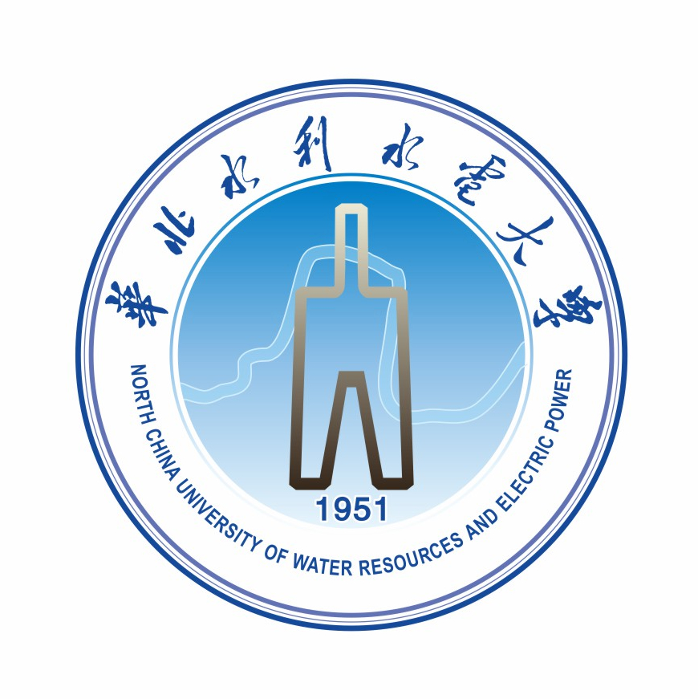
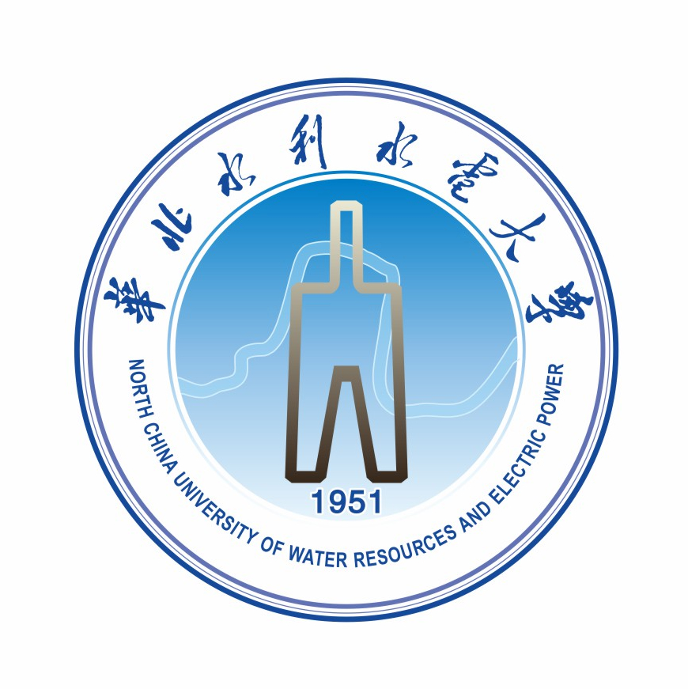
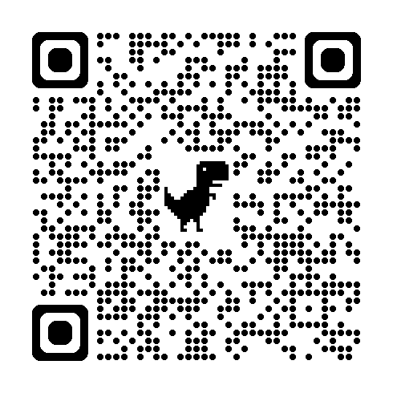

Undergraduate, Artificial Intelligence @ School of Information Engineering, NCWU, Zhengzhou, China (2020.09 - 2024.07, Thesis&PPT)
Master candidate, Computer Science @ IPIU (Key Laboratory of Intelligent Perception and Image Understanding, Ministry of Education) in School of Artificial Intelligence, XDU, Xi'an, China (postgraduate recommendation, 2024.09 - present)
Email: Gosling123456@outlook.com Rank : 1 / 60 (RANK.pdf) GPA : 4.04 / 5.0 (GPA.pdf)
[Github] [CSDN] [ORCID] [Job Résumé-EN (If you are looking for a Computer Vision intern or Ph.D. Student)]
- LLM (Large Language Model, Agent && Embodied AI)
- Intelligent control Brain-machine interface
- Artificial intelligence (deep learning) Computer vision (mainly autonomous driving, 3D vision, medical image processing)
- Remote sensing pre-trained large model construction and practical application Synthetic aperture radar (SAR) image intelligent understanding and interpretation, etc.
- 【Patent】Ren Zhongle,Gao Shulin,Hou Biao,Li Weibin,Jiao Licheng.A method, system, apparatus, and medium for cross-resolution semantic segmentation of SAR images based on contrast self-supervised learning.CN202411200836.6 (Under Reviewing)
- 【Computer Software Copyright】North China University of Water Resources and Electric Power、Gao Shulin。Computerized information data encryption management system。2023SR0195257
- Outstanding Graduate Award of North China University of Water Resources and Electric Power and Henan Province Education Development Foundation of North China University of Water Resources and Electric Power, Award for Excellent Graduates, 2024 (Only 1)
- North China University of Water Resources and Electric Power scholarship fund, Awarded from Education Development Foundation of North China University of Water Resources and Electric Power, Top honors for undergraduate, 2024 (Top 1%)
- National Encouragement Scholarship, Awarded from Department of Education of Henan Province , Top honors for undergraduate, 2023 (Top 5%),[See Certificate]
- National Encouragement Scholarship, Awarded from Department of Education of Henan Province , Top honors for undergraduate, 2022 (Top 5%),[See Certificate]
- North China University of Water Resources and Electric Power Self-improvement Grant, Awarded from Education Development Foundation of North China University of Water Resources and Electric Power , Award for Excellent Students , 2022 (Top 1%)
- National Encouragement Scholarship, Awarded from Department of Education of Henan Province, Top honors for undergraduate, 2021 (Top 5%),[See Certificate]
- 2023 Henan "Internet +" College Students Innovation and Entrepreneurship Competition, Prized from Henan Provincial Department of Education, Second prize for Competitive teams(Project Developer), 2023.08 (Top 30% in Henan Province),[See Certificate]
- 2023 Henan "Internet +" College Students Innovation and Entrepreneurship Competition, Prized from Henan Provincial Department of Education, Second prize for Competitive teams(Project Developer), 2023.08 (Top 30% in Henan Province),[See Certificate]
- 2023 Henan "Internet +" College Students Innovation and Entrepreneurship Competition, Prized from Henan Provincial Department of Education, Second prize for Competitive teams(Project Developer), 2023.08 (Top 30% in Henan Province),[See Certificate]
- 2023 Henan "Internet +" College Students Innovation and Entrepreneurship Competition, Prized from Henan Provincial Department of Education, Third prize for Competitive teams(Project Developer), 2023.08 (Top 50% in Henan Province),[See Certificate]
- 2023 Henan "Internet +" College Students Innovation and Entrepreneurship Competition, Prized from Henan Provincial Department of Education, Third prize for Competitive teams(Project Developer), 2023.08 (Top 50% in Henan Province),[See Certificate]
- 2023 Henan "Internet +" College Students Innovation and Entrepreneurship Competition, Prized from Henan Provincial Department of Education, Third prize for Competitive teams(Project Developer), 2023.08 (Top 50% in Henan Province),[See Certificate]
- 2023 Henan "Internet +" College Students Innovation and Entrepreneurship Competition, Prized from Henan Provincial Department of Education, Third prize for Competitive teams(Project Developer), 2023.08 (Top 50% in Henan Province),[See Certificate]
- National College Students IoT Design Competition, Prized from Organizing Committee of National College Students IoT Design Competition, First prize for Competitive teams(Project Developer), 2023.08 (Top 10% in Northwest of China),[See Certificate]
- Chinese Collegiate Computing Competition, Prized from Organizing Committee of Chinese Collegiate Computing Competition, Second prize for Competitive teams(Project Developer), 2023.08 (Top 30% in China),[See Certificate]
- Chinese Collegiate Computing Competition, Prized from Organizing Committee of Chinese Collegiate Computing Competition, Third prize for Competitive teams(Project Developer), 2023.08 (Top 50% in China),[See Certificate]
- "Challenge Cup" National College Student Curricular Academic Science and Technology Works Competition, Prized from Henan Provincial Commitee of the Chinese Communist Youth League , First prize for Competitive teams(Project Leader), 2023.07 (Top 10% in Henan Province), [See Certificate]
- "Challenge Cup" National College Student Curricular Academic Science and Technology Works Competition, Prized from Henan Provincial Commitee of the Chinese Communist Youth League , Second prize for Competitive teams(Project Developer), 2023.07 (Top 30% in Henan Province), [See Certificate]
- China Robotics and Artificial Intelligence Competition, Prized from Organizing Committee Member of China Robotics and Artificial Intelligence Competition, Second prize for Competitive teams(Project Developer), 2023.07 (Top 30% in China), [See Certificate]
- China Robotics and Artificial Intelligence Competition, Prized from Organizing Committee Member of China Robotics and Artificial Intelligence Competition, First prize for Competitive teams(Project Leader), 2023.06 (Top 10% in Henan Province), [See Certificate]
- China Robotics and Artificial Intelligence Competition, Prized from Organizing Committee Member of China Robotics and Artificial Intelligence Competition, Second prize for Competitive teams(Project Leader), 2023.06 (Top 30% in Henan Province), [See Certificate]
- Chinese Collegiate Computing Competition, Prized from Organizing Committee of Chinese Collegiate Computing Competition, First prize for Competitive teams(Project Leader), 2023.05 (Top 10% in Henan Province),[See Certificate]
- Chinese Collegiate Computing Competition, Prized from Organizing Committee of Chinese Collegiate Computing Competition, First prize for Competitive teams(Project Developer), 2023.05 (Top 10% in Henan Province),[See Certificate]
- Chinese Collegiate Computing Competition, Prized from Organizing Committee of Chinese Collegiate Computing Competition, Third prize for Competitive teams(Project Developer), 2023.05 (Top 50% in Henan Province),[See Certificate]
- Blue Bridge Cup National Software and Information Technology Professionals Competition in Henan Province, Prized from Organizing Committee of Blue Bridge Cup National Software and Information Technology Professionals Competition, Second prize for individual, 2023 .04(Top 30% in Henan Province)，[See Certificate]
- Team Programming Ladder Race, Prized from Computer Education Research Association of Chinese Colleges and Universities, Third prize for individual, 2023.04 (Top 50% in Henan Province)，[See Certificate]
![[See Certificate]](./data/GSL/2023天梯赛.png){kind=link}
- Innovation and Entrepreneurship Training Program for College Students in Henan Province (Cooperator)
Engineering Eye in the Sky - Intelligent Engineering Hazardous Area Safety Inspector
2021.12 - 2022.12

- Innovation and Entrepreneurship Training Program of North China University of Water Resources and Hydropower (Cooperator)
My Driving Treasure - Safe Driving Behavior Monitoring and Early Warning System
2021.12 - 2022.12 - Innovation and Entrepreneurship Training Program of North China University of Water Resources and Hydropower (Leader)
Intelligent Wheeled Surveillance Robot
2022.12 - 2023.12 - Innovation and Entrepreneurship Training Program of North China University of Water Resources and Hydropower (Leader)
Intelligent Seedling
2021.12 - 2022.12
To build an intelligent construction site safety monitoring system to reduce accident rates on construction sites by monitoring high-risk areas in real time and alerting potential safety risks. In this project, I utilize the Yolo-Fastest framework for target detection to identify helmet wear and personnel behavior. Combined with Mediapipe for bone matching, fall detection is implemented for quick response to possible safety incidents. Optimize the data processing flow and improve the system response speed by designing end-side cloud-side collaborative deployment strategies. Realize automated monitoring of hazardous areas with full identification and warning.

Develop a safe driving behavior detection and warning system based on AIoT technology. The project realizes real-time monitoring and warning of driver fatigue and distraction behaviors by integrating fatigue detection algorithms, behavior recognition models, video pushing and encryption technologies, and multiple sensor devices. I was responsible for the outline design, detailed design, hardware selection, software development and test verification of the system, which ensured the high accuracy recognition and stable operation of the system under various lighting environments. In addition, I designed a WeChat applet for data display, which improves the user experience and provides an effective technical solution for the safety management of operating vehicles.
An intelligent robot called “Wise Eye” has been developed for the safety monitoring of young children and parent-child companionship. Utilizing infrared and ultrasonic sensors as well as cameras and speakers, the robot is equipped with obstacle sensing, image acquisition, dynamic decision-making, and voice interaction capabilities, and is able to autonomously navigate and follow the toddler, as well as detecting dangerous scenarios and alerting the guardian through audio signals. The final development is a full-featured intelligent robot that provides all-round safety protection and interesting interactive experience for young children. The robot won the second prize at the national level in the 2023 China University Computer Design Competition.

A smart nursery system has been developed to help farmers automate irrigation, ventilation, light supplementation and shading of crops in order to provide optimal growing environment for crops. The system collects environmental information through various sensors, including soil moisture, air temperature, light intensity, etc., and also utilizes Raspberry Pi as a lower computer to control various servos for automated control. The scope of the project covers the whole process from requirement analysis, hardware design, software programming to system testing. My main task is to write a Raspberry Pi control program using Python to process the sensor data and adjust the servo actions according to the data in order to realize automated seedling nursery.
- Mengfu (Shanghai) Education and Technology Co., Ltd.[Internship Certificate] AI Program Mentor 2024.06 - 2024.08
- Beijing Hezhong Weiqi Technology Co., Ltd.[Internship Certificate] Data Analyst 2023.07 - 2023.10
Blind mutation prediction of proteins: a novel approach is proposed to predict the effects of protein mutations by integrating the primary and tertiary structures of proteins using Equivariant Graph Neural Network (EGNN). Integration of primary and tertiary structures of proteins using EGNN captures global and local representations of proteins. Semantic embedding of protein sequences by Transformer model ESM-2 to extract evolutionary information of protein sequences. Topologically encode the geometric structure of proteins using EGNN to capture the microenvironment and local structure of proteins. Random perturbations are introduced to simulate natural mutations and prevent model overfitting. The stability of the mutated proteins is assessed by comparing the protein sequence embedding before and after mutation and calculating the fitness score.
Tunable long-duration FLAIR MRI estimation/synthesis for multiple sclerosis:Aiding medical diagnosis and treatment by improving the accuracy of lesion region segmentation through deep learning techniques. The core work of the project consists of preprocessing the brain MRI image dataset to ensure that the data is adapted to the needs of the deep learning model. For model development, we first adopted the classical U-Net architecture, and then introduced an attention mechanism to enhance the model's ability to recognize key regions. In addition, utilizing the pre-trained ResNet34 model, we constructed a U-Net model with stronger feature extraction capability in an attempt to accelerate the training process and improve the performance. In terms of loss function, we not only implemented the basic Dice Loss, but also tried SoftIoULoss and CalcLoss to optimize the training process of the model. By designing a training process that includes data augmentation, learning rate adjustment, and batch size selection, we conducted multiple rounds of experiments to meticulously tune the model parameters and training strategies. The performance evaluation mainly relies on the metric Dice Similarity Coefficient (DSC), through which we comparatively analyze the performance of different model structures and loss functions. The results of the project show that the base U-Net model achieves a DSC value of about 90% on the test set, while the introduction of the attention mechanism improves the DSC value to 91.45%, which demonstrates a significant improvement in the model performance.The ResNet34+U-Net model also performs well, with a DSC value of 91.17% and a faster training speed.
Research and development of AI mural painting restoration technology: Aims to use advanced AI algorithms to overcome the challenges of cultural relics restoration, especially for the digital restoration of mural paintings. Select and train the existing Muralnet model with Adversarial Generative Network technology to optimize the mural restoration effect. Configure and maintain the experimental environment, including Python 3.7, PyTorch 1.6, and hardware resources such as NVIDIA GPU RTX2080ti. Setting and adjusting model parameters, including training mode, non-extremely large value suppression, random seed, etc., to adapt to different experimental needs. Use Python for image noise reduction and edge extraction, and adopt Canny operator to realize the best edge detection effect. Uniformly process mural images of different sizes for data preprocessing to improve the accuracy and effectiveness of model training. Train and test the model, record and analyze the comparison between the input image, the original line drawing, the obtained image and the expected effect. The preliminary restoration and color supplementation of the mural images were achieved to improve the restoration efficiency and quality. The optimization directions of model parameters and training strategies are found and proposed through experiments, laying the foundation for further improvement of the model. Efficient methods of data processing are explored, reducing the processing time of a single image and improving the overall work efficiency.
Magic Melodic:Aims to transform human hummed melodies into musical compositions and provide innovative ways for music creation. I am responsible for audio processing, feature extraction, note recognition, sequence generation, and the development of sequence modeling and musical continuation algorithms using Recurrent Neural Networks (RNN) and Long Short-Term Memory Networks (LSTM). By training the model to recognize humming melodies and generate accompaniments, I ensured that the technical implementation of the system was accurate, the musical quality was artistic, and the user experience was optimized. The project ultimately achieved a 65.7% accuracy rate
1.Design meter OCR model: Responsible for the design and integration of OCR model, through adaptive image cropping to improve the recognition speed of the cropped small pictures, to improve the boundary text information in a statistical way, to improve the recognition accuracy; through the model of parallel processing can improve the recognition speed, to solve the problem of the existing OCR technology is mainly used in the way of compression of the image size to alleviate the large-size image, so that the text information is omitted, resulting in reduced recognition accuracy and deep learning algorithms require a high operating environment, the operating speed is slightly poorer on ordinary hardware configuration. The existing OCR technology mainly adopts the method of compressing the image size to alleviate the large-size image, which makes the detected text information missed, resulting in the reduction of the recognition accuracy and the deep learning algorithm has higher requirements on the running environment, and the running speed is a little bit poorer in the ordinary configuration of the hardware.
2. Research and development of electric power inspection safety monitoring model: Participate in the field operation wisdom model research and development work, for the electric power inspection workers safety wear clothing (such as helmets, coveralls, insulated gloves, insulated shoes and other safety equipment) norms for monitoring. The model is developed based on Paddle framework, mainly using PicoDet and PP-yoloe network to train the model, and then the model is quantized to make the model lighter. In addition, we are responsible for the correction of the model and data review and correction.
3. Optimization of image clarity: Participated in and solved the problem of unclear images of key information in the field, using super-resolution model processing and generating adversarial networks to generate the original images.